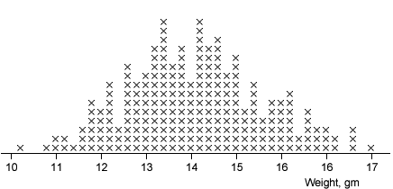

Density
In a stacked dot plot (or stem and leaf plot), the highest stacks contain the most values. These stacks have the highest density of values.
When looking at a stacked dot plot or stem and leaf plot, we sub-consciously round off the jagged columns of crosses or leaves with a curve. This smoothed curve describes the density of values and helps us to understand the distribution of values.
The stacked dot plot below describes a large data set.

The useful information in the dot plot about the shape of the distribution comes from the 'shape' of the tops of the columns of crosses. Select Dot plot plus density from the pop-up menu to see this.
Finally select Density only from the pop-up menu. The curve effectively describes the distribution of values without the distraction of the individual crosses.